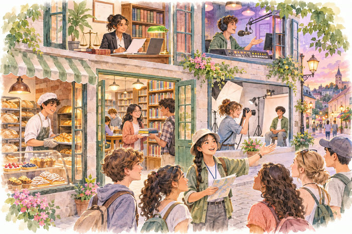

Listen to the text
Speed:

For our project "Jobs Around Us" I didn't go to a factory or a big company. I walked along my own street, Zelena Street, with a notebook. It is only six hundred metres long, and I found sixteen professions on it. I started at the corner, in the old building of the court. A judge works there, and a lawyer has an office on the ground floor. I was a little afraid to go in, but the lawyer, Mr Ostap, gave me five minutes. "My job is to explain the law in human language," he said. Next door is the animal clinic with a vet, and then the library. The librarian, Ms Stefa, has worked there for thirty years. She knows what every child on our street reads. In the tall glass building there are three companies. I met a company director who starts work at seven, an office assistant who knows where everything is, an IT manager and two software engineers who were arguing about a mistake in the code. On the top floor an architect was drawing a new kindergarten. She let me look at the model. On the other side of the street is our school with its head teacher. Opposite the school there is a photo studio. The photographer told me that he took pictures of my parents' wedding. The family doctor has her surgery at number 18. At number 20 there is a small radio station. I was allowed to sit in the studio for ten minutes and watch a DJ and a news presenter at work. The presenter read the news in a calm, beautiful voice and ate a sandwich during the songs. At the end of the street, near the old church, I met a tour guide with a group of tourists. He was telling them the history of my street. I listened and learnt three facts that I had never known. That makes fifteen. The sixteenth profession I found at home. My neighbour on the fourth floor is a movie producer. I had always thought that he was just a man with a tired face and a lot of phone calls. I used to think that interesting jobs were somewhere far away, in big cities and on TV. Now I know that they are behind every door. You only have to knock.
Tap any sentence to hear it again.
Сподобалось? На сайті ще більше матеріалів для вчителів!
Reader, презентації, ігри, діагностичні та контрольні роботи до підручників 1-11 класів.
Перейти на сайт materials.allaenglish.com